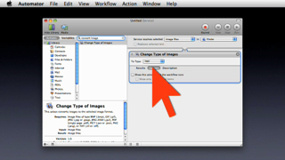

Services: Power Where You Need It
The automation technologies in Mac OS X are designed to be used by the widest possible audience: from those who have a technical side and enjoy writing their own automation code, to those who just want to use the available automation tools. Services is the technology that delivers the power of automation, where you need it, when you need it. With Services, the ability to turbo-charge your computer, is close-at-hand and just a click away.
STEP #1: Watch a Movie!

The easiest and the best way to get up-to-speed on Services, is to click the image to the left, and watch the 5-minute video “What is Services?” (HD version). The video starts at the very beginning and explains what Services is and how it works. After you’ve watched the movie, you’ll be ready to take a hands-on approach and follow the other steps below to create your own Service workflows using Automator.
Each of the following tutorials is fun, easy-to-follow, and only take a few minutes each to build. Each tutorial demonstrates the power and ability of Services. When you’re done with the tutorials, you’ll be ready to explore on your own. Enjoy!
STEP #2: Build Your First Service
The first tutorial is a simple service workflow for creating an keyboard application launcher. Here’s how!